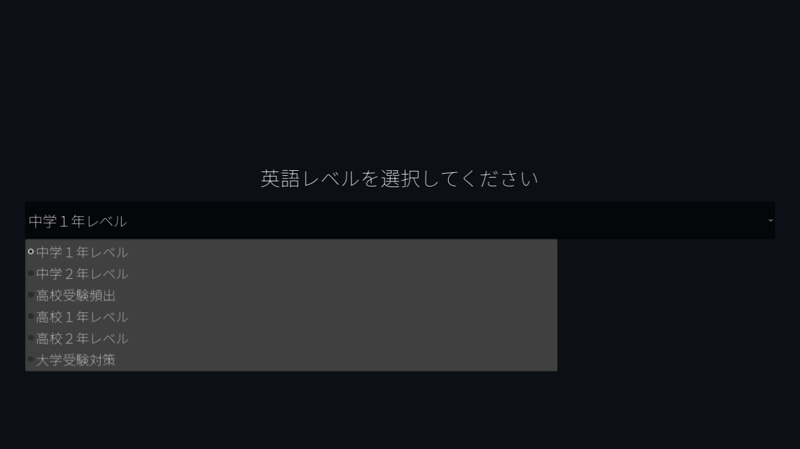
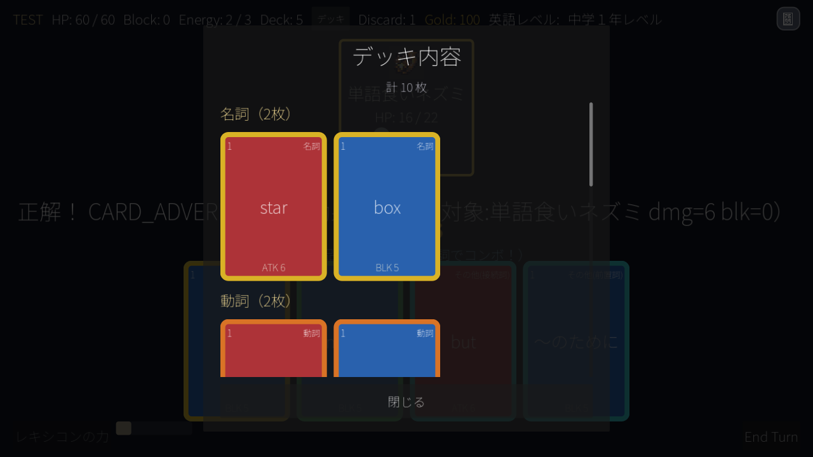
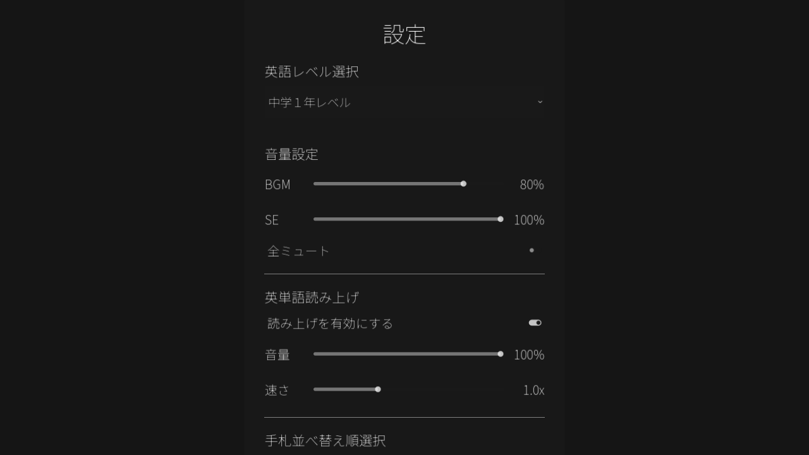

遊び方・操作方法
LexiconRogueの基本的な流れと、戦闘・クイズのルール、操作方法をまとめます。
基本の流れ
ゲームを開始すると、まず英語レベルを選択します。ラン開始直後には「旅立ちの選択」イベントで3択のボーナスを選び、そのあとマップ画面に進みます。1回のランは全3Act・通算30階層で構成され、各Actのマップは10階層。各Actの最後にはそのAct専用のボスが待ち構えています。
- 英語レベルを選択してゲーム開始
- 「旅立ちの選択」で最初のボーナスを1つ選ぶ
- マップ上のマスを選んで1階層ずつ進む（戦闘・宝箱・ショップ・イベント・休憩など）
- 戦闘に勝つとゴールドとカード、状況によってはレリックを獲得
- Act1・Act2のボスを倒すと次のActへ進み、新しいマップが生成される
- Act3（最終Act）のボスを倒すとラン完全クリア

ゲーム開始時に、中学1年レベルから大学受験対策レベルまで6段階から英語レベルをドロップダウンで選べます。
戦闘とクイズの基本ルール
戦闘は自分のターンとカードプレイ、敵のターンの繰り返しです。1ターンに使えるエナジーは3、手札は5枚まで持てます。カードはそのままでは発動しません。手札のカードを前方向にドラッグしてプレイすると、そのカードに紐づく英単語のクイズが表示され、正解して初めてカードの効果（攻撃・シールドなど）が発動します。不正解の場合、そのカードの効果は発動しません。
2種類の出題形式
- 英→和（EN→JP）：英単語が大きく表示され、4つの日本語訳から正しい意味を選びます。
- 和→英（JP→EN）：日本語の意味が表示され、4つの英単語から正しいスペルを選びます。

カードをドラッグしてプレイすると、その場でクイズが表示されます。正解して初めてカードの効果が発動します。
品詞コンボ
カードにはそれぞれ「名詞・動詞・形容詞・副詞・その他」のいずれかの品詞が割り当てられています。直前に正解したカードと同じ品詞のカードに連続で正解すると品詞コンボが成立し、2枚目以降のダメージ・シールドに+2ずつのボーナスが加算されていきます。品詞が途切れる（別の品詞に正解する、または不正解になる）とコンボはリセットされます。
敵の相性システム
一部の敵は特定の品詞に弱かったり、耐性・無効を持っていたりします。中には以下のような特殊なギミックを持つ敵もいます。
- 気絶：弱点の品詞で正解すると、その敵は次の攻撃を1回スキップします。
- 回避：特定の品詞を当てるまで、それ以外の攻撃をすべて回避（ダメージ0）します。
- シールド貫通・無効化：特定の品詞のシールドしか効かない、または特定の品詞のシールドだけが一切効かない攻撃を持つ敵がいます。
レキシコンの力
現在のデッキに乗っている単語のうち、そのランで一度でも正解した単語が半分以上になると、画面左下の「レキシコンの力」ボタンが発動可能になります（ボタン横のバーが、灰色から黄色に変わりながら達成度を示します）。発動すると、デッキ内の単語がまとめて新しい単語に入れ替わり、そのカードは強化状態になります。同じ単語が定着したら、新しい単語でさらに語彙を広げていくための仕組みです。
左下の「レキシコンの力」ボタンと達成度バー。カードの背景色は種類（攻撃=赤／防御・技=青／パワー=紫／弱点=焦げ茶／お邪魔=灰）で、枠線の色は品詞で分かれています。
操作方法
- カードを使う：手札のカードを上方向にドラッグしてプレイします。
- カードの詳細を見る：カードを軽くタップすると、効果の詳細（右側パネル）が表示されます。
- クイズに解答する：4つの選択肢のいずれかをタップします。
- 読み上げ機能：クイズが表示されると、対象の英単語（和→英の場合は4つの選択肢すべて）が自動で読み上げられます。「再生」ボタンでいつでも聞き直せます。読み上げのON/OFF・音量・速さは設定画面で調整できます。
- デッキ内容を確認する：画面上部の「デッキ」ボタンから、現在のデッキ全体を品詞順に確認できます。レキシコンの力で強化済みのカードには専用のバッジが付きます。
- 設定を開く：画面右上の歯車アイコンから、英語レベルの変更、BGM/SE音量、読み上げ設定、手札の並べ替え順を変更できます。

デッキ内容表示パネル。品詞ごとにグループ分けされ、強化済みのカードが一目で分かります。

設定画面では英語レベルの切り替えのほか、音量・読み上げ機能のON/OFF・速さ・音量を調整できます。